美食筆記 · 來自 Obsidian
胡志明探店🔥人均60➕活蝦自助
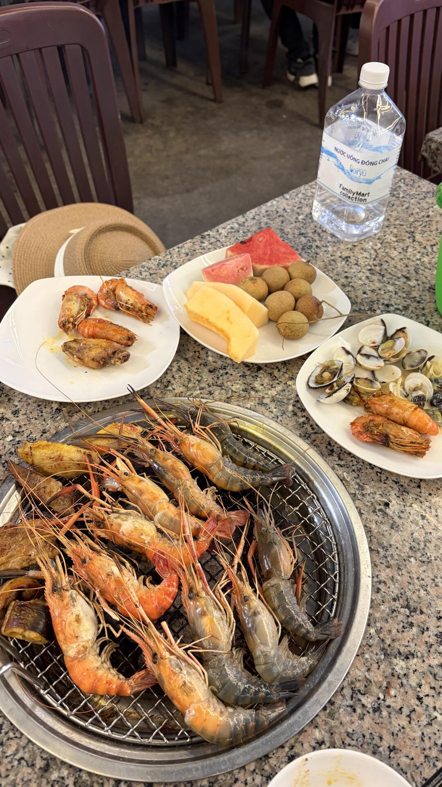
在胡志明吃的每一家都難吃無比，xhs 推的各種米其林也是很難吃，誤打誤撞搜到這家感覺不錯就來了，全是本地人只有我們一桌外國人來吃
- 店名：Buffet Khói（第七郡）
- 地址：88 Đường số 7, An Lạc, Hồ Chí Minh
- 營業時間：每日 16:00 – 22:00（下午 4 點開餐！17:30 後要排長隊）
- 電話：+84977686894
- 基礎自助 220k ≈ 63 人民幣（海鮮、熟食、甜品全部包含）
- +20k 飲料暢飲（茶飲+可樂），店裡自帶飲料選擇不多，很推薦加購
- +49k 解鎖冬陰功酸湯火鍋✨ 強烈推薦，涮海鮮巨好吃
✅ 活蝦現撈區 🌟全場 MVP——水池裡蝦活蹦亂跳，自己夾子撈，蝦肉 Q 彈緊實，直接狂炫三盤！
✅ 冬陰功酸湯火鍋——酸辣開胃，涮貝殼、魷魚鮮掉眉毛，還可以下米粉直接做成泰式船麵，口感絕了
✅ 熟食區真的驚喜——烤雞翅焦香爆汁、越式春卷酥脆掉渣，這個價位居然還有現煎牛排，誠意滿滿
1. 飲料品類少，優先 +20k 升級暢飲套餐
2. 盡量早到，五點半之後大排隊；穿方便行動的衣服，撈蝦更自在
3. 活蝦現撈，下手快才能拿到更多！
📸 實拍
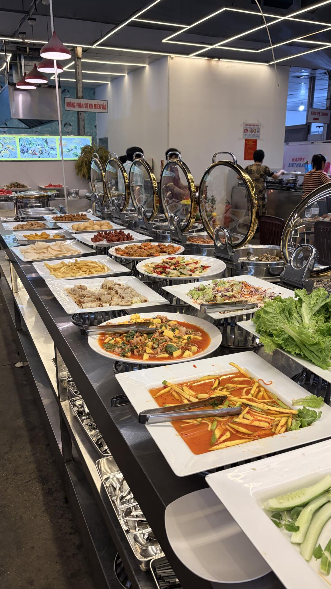
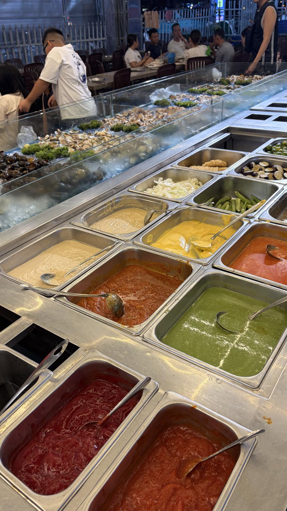
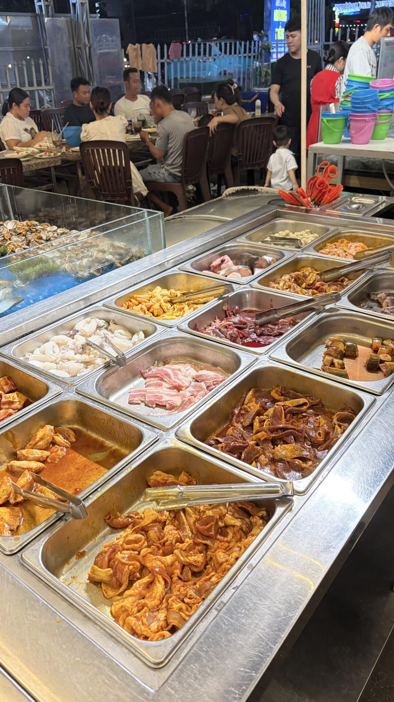
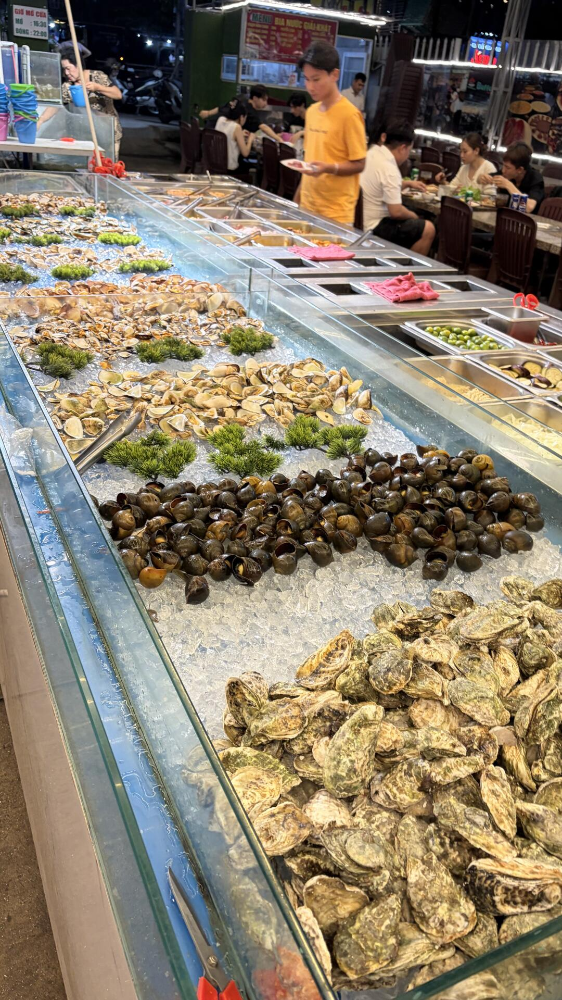
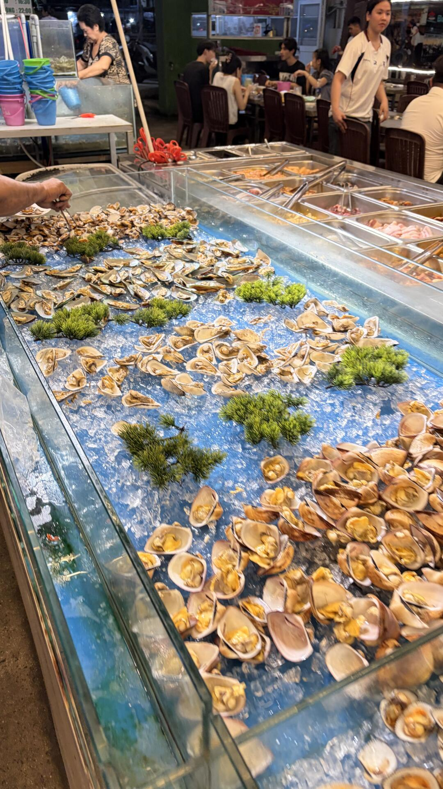
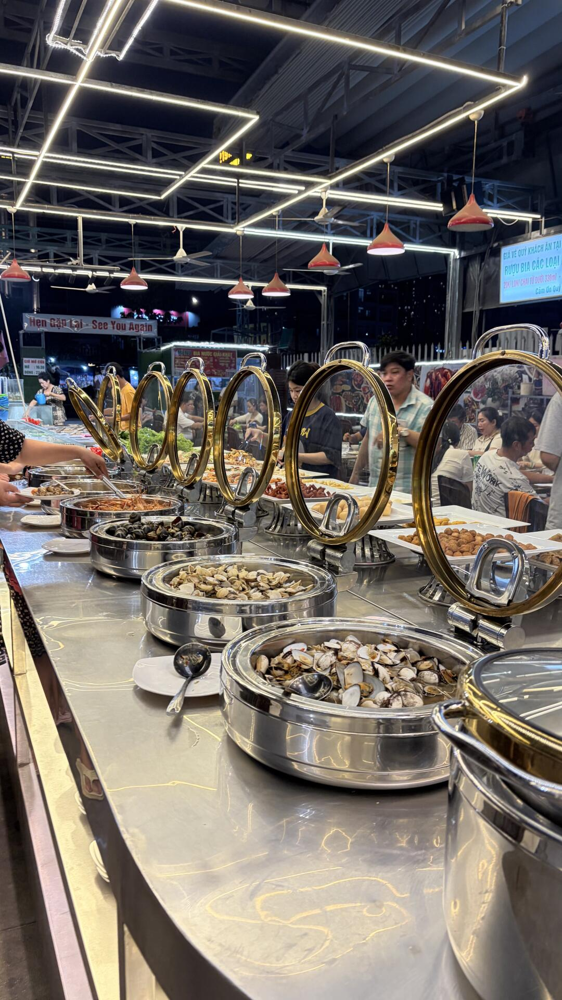
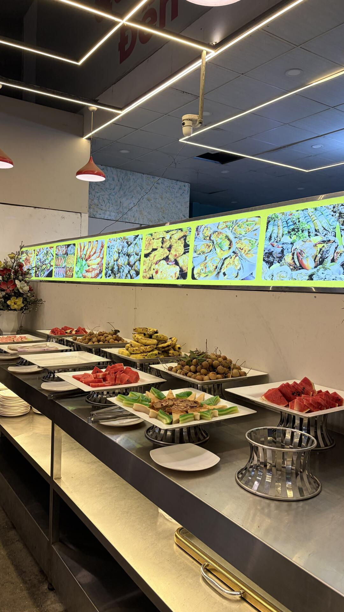
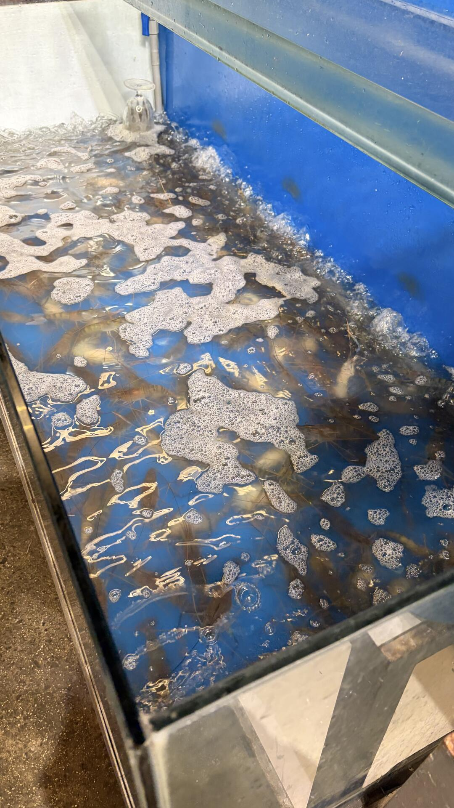
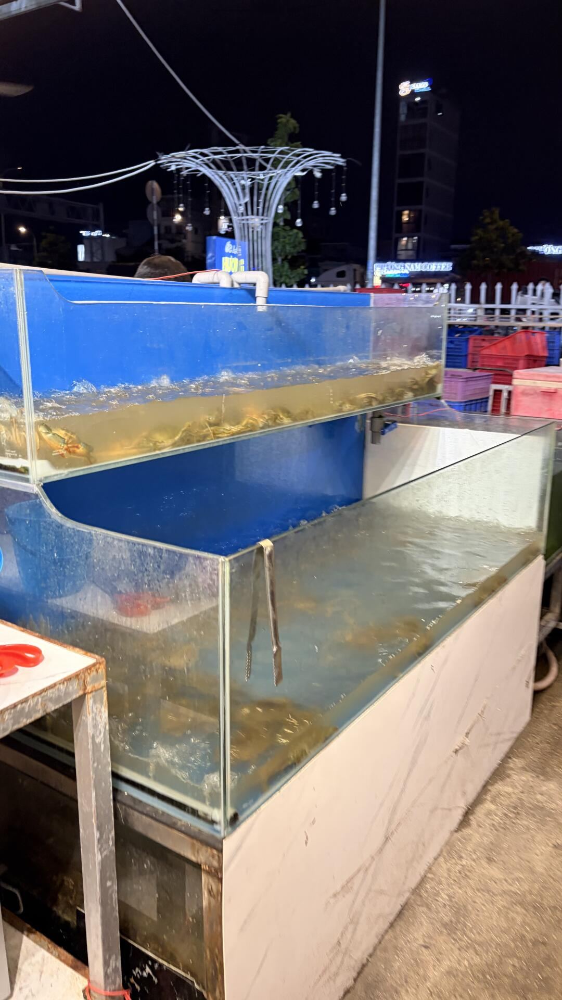
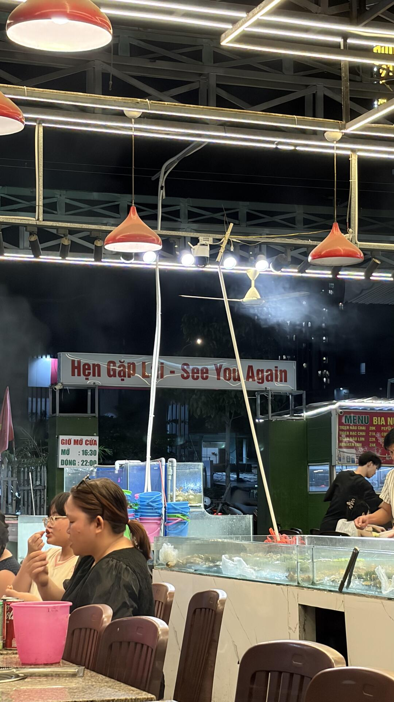
📌 資料來源：內容與照片來自小紅書實地帖文（Pebble 擷取至 Obsidian，2026-10）。
營業時間、價格與電話可能變動，出發前建議以現場或官方最新資訊為準。